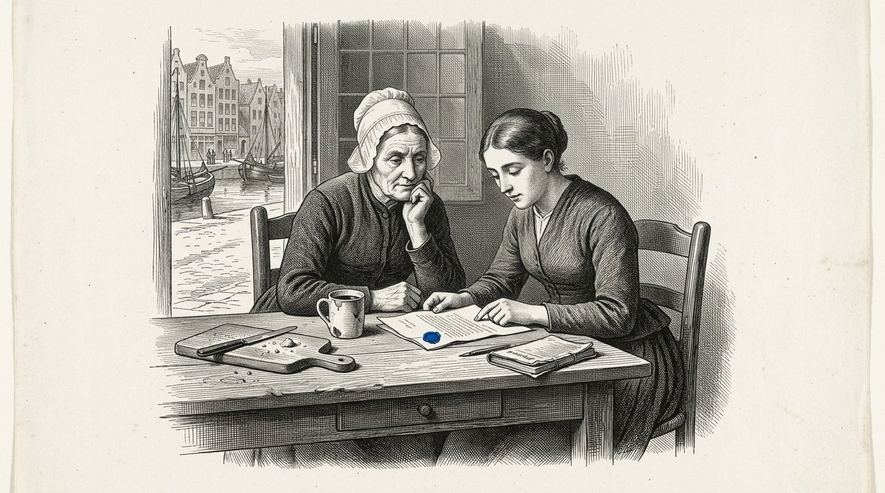

De vloeistof die niemand had gezien
Proloog — gesproken door Kosus
Ik ben Kosus. Wanneer u dit boek opent, ben ik al niet meer onder u. Ik heb het aan Alkion gegeven om te bewaren tot de tijd rijp was, en Anthea heeft het samen met haar op papier gezet.
In Boek Eén heb ik u de vier zuilen gegeven en de vijf schepen laten zien. Ik heb u verteld over de zon op de evenaar en over de prinses die ontwaakt. In dit vierde boek gaat het om één ding dat in de andere boeken tussen de regels doorging maar nooit is uitgeschreven: de vloeistof die uit het gras komt wanneer u het koud perst.
Wij noemen haar hydrolysaat. Zij is niet één ding maar vele dingen tegelijk. Zij is brandstof voor uw kachel wanneer de gasrivieren dichtvriezen. Zij is bindmiddel voor de wegen die u onder de voeten van uw kinderen legt. Zij is grondstof voor plastic dat honderd jaar meegaat in plaats van vijf.
Zij is één antwoord op drie vragen die u tot nu toe met drie verschillende invoerlijnen beantwoordde. Wie drie vragen met één antwoord beantwoordt, wordt niet armer maar minder afhankelijk. Wie afhankelijk is, wordt beslist. Wie minder afhankelijk is, beslist zelf. Dat is niet techniek. Dat is soevereiniteit.
Ik heb Alkion in Boek Eén de storm laten horen. Ik heb Petros aan de kade laten aankomen. Ik heb u de zon op de evenaar getoond en het schip dat vaart met eigen brandstof. Dit vierde boek is de bijsluiter bij die verhalen. Wie het leest, weet niet alleen dat de zon werkt. Hij weet ook hoe.
En hij weet, wat belangrijker is, waarom het niet zonder wederkerigheid werkt. De weegschaal van Timaris weegt hier zwaar. Een vloeistof uit het gras van een ander land is geen olie die u koopt. Het is een handdruk in glas.
De Kosus zegt:wat u drie keer koopt bij drie verschillende heren, kunt u ook een keer bouwen met één buur. De eerste manier maakt u afhankelijk. De tweede manier maakt u familie.
Door Jacobus van Merksteijn
Dit is Boek Vier van de Kosaris. Het volgt Boek Eén, waarin de vier zuilen zijn gelegd en de twaalf delen de wereld hebben doorlopen van de vergeten haven tot de keuze aan de lezer. Het staat naast Boek Twee, dat over Diakrisis ging — het onderscheid tussen wat vaststaat en wat is aangenomen. En naast Boek Drie, waarin Anthea toonde hoe een kind wordt voorbereid op zelfstandig oordeel.
Dit vierde boek gaat over klimaat, maar niet zoals de kranten erover schrijven. Het gaat over één stof die uit één gras komt en die drie problemen tegelijk oplost: de energie die uw huis warm houdt, de weg waarop uw kinderen naar school lopen, en het plastic waar hun boeken in verpakt zijn. Als één stof drie problemen tegelijk oplost, verandert er meer dan techniek. Er verandert wie beslist.
De personages zijn niet nieuw. Alkion kent u uit Deel VI van Boek Eén, waar zij de storm hoorde die niemand anders hoorde. Petros kent u uit Deel VIII, waar hij aan de kade van Malta bij de oude Ridder aankwam. Demira staat aan haar oven zoals altijd. Anthea is inmiddels volwassen en zij is degene die dit boek van hand tot hand doorgeeft.
Ik noem één ding bij naam dat de kranten liever vermijden. Wij noemen de vloeistof hydrolysaat. Zij komt uit reuzengras dat Juncao heet en uit een boom die Moringa heet. Zij wordt gemaakt door koud persen, niet door verwarmen en niet door gisten. Zij komt uit de aarde zonder de aarde te breken. En zij komt uit de zon op de evenaar, waar zij is en waar zij blijft.
Wie dit boek leest en het aan een minister laat lezen, verandert de minister niet. Wie het aan zijn buurman leest, verandert misschien het dorp. Zoals altijd bij deze boeken: de macht ligt in het doorgeven, niet in het overtuigen van wie doof wil blijven.
Malta, november 2026.

Waarin Alkion terugkeert naar de haven, Demira haar leert wat er uit het reuzengras komt, en de eerste fles hydrolysaat wordt geperst.

Alkion was zesentwintig geworden. Zij had zes zomers in het zuiden gewerkt bij de plantages van Juncao en zij was in de winter thuisgekomen omdat Kosus haar had geschreven dat hij haar iets wilde tonen. Zij vond hem niet meer aan de kade toen zij aankwam. Hij was drie weken eerder gestorven, en Demira had het haar niet kunnen laten weten omdat de brief te laat vertrok.
Zij zat de eerste ochtend na haar aankomst op de bank naast de bakkerij en zij keek naar de haven. Demira kwam naar buiten met een kop warme melk en zei: hij heeft mij iets voor jou nagelaten. Het staat achter in de bakkerij.
Alkion volgde haar naar binnen. In de achterkamer stond een houten kist en op de kist lag een brief. De brief was in Kosus' handschrift. Er stond: Alkion, je hebt zes jaar in het zuiden geleerd wat het gras kan. Nu is het tijd om te leren wat het gras is. Open deze kist wanneer je in een rustige bui bent.
Alkion opende de kist. Erin lag een houten schroefpers, klein maar zwaar, van het formaat dat men vroeger voor druiven gebruikte. En een glazen fles, leeg. En een schrift met een leren band. Op de eerste bladzijde stond in Kosus' handschrift: het hydrolysaat.
Alkion las de bladzijden. Zij las langzaam, want Kosus schreef zoals hij sprak, en zij hoorde zijn stem terug. Hij had opgeschreven hoe men het gras koud perst zonder de warmte die de zoetheid breekt. Hij had opgeschreven welke planten men ertussenin zet zodat het gras zichzelf voedt en de vloeistof zuiver blijft. Hij had opgeschreven wat er uit komt: een vloeistof die brandt zonder rook, die hardt zonder cement, die vormt zonder gieten.
Alkion sloot het schrift. Zij keek Demira aan. Zij zei: dit is niet één ding. Dit is drie dingen tegelijk. Demira zei: dat is precies wat hij vier avonden voor zijn dood tegen mij zei. Hij zei: als iets één ding is dat drie dingen tegelijk doet, is het niet techniek. Het is een sleutel.
Alkion legde de brief weer op de kist. Zij zei tegen Demira: dan ga ik morgen persen.
De Kosus zegt:wie een sleutel erft, erft geen slot. Hij erft de plicht om te zoeken welke deuren er in zijn tijd zijn opengegaan en welke gesloten zijn gebleven.

Demira dacht dat het persen op een druivenpers zou lijken. Alkion legde uit dat het anders was. Bij druiven pers je om het sap eruit te krijgen. Bij Juncao pers je om de structuur uit elkaar te trekken zonder haar te breken. Als je te warm perst, oxideert de vloeistof en verlies je de helft. Als je te koud perst, komt er niets uit. De temperatuur moet die van een lauwe zomerochtend zijn.
Zij spanden het gras in de pers zoals het schrift zei: eerst geplet tussen twee doeken, dan gelaagd met een handvol Moringa-blad ertussen die uit een gedroogde bundel kwam die Kosus had achtergelaten. De Moringa deed iets wat men zonder haar niet begrijpt: zij hield de deeltjes uit elkaar. Zonder Moringa klontten ze samen en werd de vloeistof troebel. Met Moringa bleef zij helder als amber.
Zij draaiden de schroef aan. Het duurde een uur voordat de eerste druppel kwam. Zij duurde nog een uur voor er een dun straaltje in het glas liep. Aan het einde van de dag hadden zij een halve fles.
Demira zei: is dit alles? Alkion zei: dit is uit een handvol. Als u een baal perst, krijgt u een halve liter. Als u een schuur vol perst, krijgt u honderd liter. Als u een veld perst, krijgt u drieduizend.
Demira keek naar de fles. Zij zei: waar brandt zij in? Alkion zei: nog niet in wat wij hebben. Ik moet een kachel bouwen die van deze vloeistof houdt. Wij hebben veertig jaar kachels gebouwd die van gas houden en van kolen houden. Deze vloeistof heeft haar eigen kachel nodig. Dat wordt volgende week.
Demira zei: en de rest? Alkion zei: hier is de eerste. Zij tilde de fles op tegen het licht en zij zag hoe de vloeistof binnen kleurschakeringen droeg die van geel naar amber naar bijna blauw liepen wanneer men het licht kantelde. Zij zei: Kosus zei dat wie deze vloeistof voor het eerst ziet, drie ademen moet zwijgen. Zij zwegen drie ademen.
Toen zei Demira: ik heb in mijn leven brood gezien uit deeg komen en kinderen uit vrouwen. Dit is het derde ding dat mij verwondert.
De Kosus zegt:wat koud wordt gemaakt uit iets dat groeit, houdt de kracht van wat gegroeid is. Wat heet wordt gemaakt, verliest de helft van wat het was. Wie het koud maakt, houdt de zon vast. Wie het heet maakt, verspilt haar.

De tweede dag kwam de buurvrouw van Demira aankijken. Zij heette Marta en zij bakte niet, maar zij verkocht groente op de markt. Zij had vier kinderen en zij was gewend om overal een mening over te hebben.
Marta zag de pers en de fles en zij zei: wat is dat voor kroeg die je aan het inrichten bent? Demira zei: het is geen kroeg. Het is een vloeistof die brandt en die bindt en die vormt. Marta zei: als het brandt en bindt en vormt is het geen vloeistof, het is een leugen.
Alkion zei niets. Zij nam een lepel van de vloeistof en zij goot haar in een schaaltje. Zij pakte een kaars van de tafel en hield de vlam bij het schaaltje. De vloeistof vatte vlam. Zij brandde met een gelijkmatige blauwe vlam, zonder rook, en gaf warmte af die je op je gezicht voelde als je een handbreed weg zat.
Marta zei: dat is jenever. Alkion zei: proef. Marta durfde niet. Alkion doopte haar vinger in het schaaltje en likte. Zij zei: het smaakt naar niets. Jenever smaakt naar jenever. Dit smaakt zoals water smaakt: niet.
Marta zei: dan is het olie. Alkion zei: olie stinkt. Deze niet. Ruik. Marta rook. Zij zei: het is waar, het ruikt niet.
Marta ging zitten op de bank. Zij zei: wat is het dan? Alkion zei: het is wat er in het gras zit dat het gras opbouwt. Wij hebben dat er nu uitgehaald zonder het te verhitten. Het is oud. Elke plant heeft het. Wij hebben nooit gevraagd of het er ook uit wilde komen zonder dat wij het gaan koken.
Marta dacht na. Zij zei: en het gras zelf? Blijft dat over? Alkion zei: het gras wordt na het persen tot voer voor koeien. Wat overblijft na het voer wordt teruggeploegd op het veld waar het gras groeide. Er gaat niets weg. De koe eet het en de aarde krijgt het terug. Wij nemen alleen de vloeistof, en die is wat wij hier van maken.
Marta stond op. Zij zei: als dit klopt, wat u zegt, dan hebben wij veertig jaar niet nagedacht. Demira zei: dat is precies wat Kosus zou zeggen. Marta zei: en waar is Kosus dan nu? Demira zei: dood. Marta zei: dat is jammer. Ik had hem willen vragen waarom hij ons dit niet dertig jaar geleden heeft verteld.
Alkion zei: hij heeft het verteld. Wij hebben niet geluisterd. Dat is anders.
De Kosus zegt:wie een nieuwe stof niet gelooft omdat hij nog nooit erover heeft gehoord, gelooft ook niet in vuur, in bier of in eieren totdat hij ze de eerste keer heeft gezien. Het verschil tussen ongeloof en onwetendheid is één demonstratie op de bank naast de bakkerij.

Die nacht las Alkion het schrift van Kosus verder. Zij las bij een lamp die op de vloeistof zelf brandde, die zij in een oud olielampje had gegoten. De lamp brandde helderder dan de olielampen die zij gewend was, en zonder de zoete rook.
Kosus had zes bladzijden geschreven over wat hij hydrolysaat noemde. De eerste bladzijde ging over hoe men het perst. De tweede over wat men eruit maakt. De derde over wat men niet moet doen. De vierde over de partners aan de evenaar. De vijfde over de doornenhaag rond de bestuurders. De zesde was een brief die begon met: aan wie na mij dit ontvangt.
In de derde bladzijde, wat men niet moet doen, stond dit: verwarm de vloeistof niet tot ethanol tenzij u zich in nood bevindt. Ethanol is een tussenstap die alles vervlakt tot brandstof. Wanneer u ethanol maakt, verliest u wat de vloeistof bijzonder maakt: haar veelzijdigheid. U kunt dan alleen nog stoken. U kunt niet meer binden of vormen.
Alkion legde het schrift neer. Zij begreep wat hij bedoelde. De haastige weg door de crisis heen was ethanol maken en het snel opstoken in oude motoren. De trage weg was leren wat de vloeistof zelf is en er bouwen mee. De haastige weg zou de kranten halen. De trage weg zou de eeuw halen.
Zij ging verder met de vijfde bladzijde, over de doornenhaag. Kosus had geschreven: wie deze vloeistof in Brussel probeert door te krijgen als brandstof, wordt afgewezen omdat zij niet in de bestaande categorieën past. Wie haar probeert door te krijgen als bindmiddel, wordt afgewezen omdat er geen keuring voor is. Wie haar probeert door te krijgen als grondstof voor plastic, wordt weggehoond omdat plastic slecht is. Wie haar door alle drie de deuren tegelijk probeert door te krijgen, wordt weggestuurd door drie ambtenaren die elk hun eigen dossier hebben en die niet met elkaar praten.
Kosus had daaronder geschreven: wat te doen? Loop om de haag heen. Bouw eerst in een dorp. Laat het werken. Wanneer honderd dorpen het doen, komt de haag naar u toe. Wacht niet op haar. Zij komt niet uit zichzelf.
Alkion sloot het schrift. Zij dacht: dat is wat ik ga doen. Dorp voor dorp.
De Kosus zegt:een schrift dat u erft van een leermeester is geen bijbel. Het is een reisgids. Wie de gids leest en niet reist, heeft niets. Wie reist zonder gids, verdwaalt. Wie leest en reist tegelijk, komt aan.

Waarin Alkion een kachel bouwt die van hydrolysaat houdt, het dorp een winter warm blijft zonder de gasrivieren te vragen, en de burgemeester leert wat het verschil is tussen goedkoper en soevereiner.

Alkion vond een oude smid aan de andere kant van het dorp. Hij heette Wilm en hij was gepensioneerd sinds vijf jaar. Hij had drie kachels in zijn schuur staan die hij nooit had verkocht omdat de mensen inmiddels gas hadden.
Zij zei tegen hem: ik heb een vloeistof die brandt zonder rook. Wilm zei: dan is uw vloeistof beter dan mijn kachels. Zij zei: uw kachels waren gebouwd voor olie. Ik wil er een omzetten voor deze vloeistof. Wilm zei: laat maar zien.
Zij bracht hem een fles. Zij goot een lepel in een schaaltje en stak hem aan. Wilm keek naar de blauwe vlam en hij bleef stil. Toen zei hij: die vlam heeft de temperatuur van goede kolen. Maar zij heeft niet de neiging om onderaan te blijven en de lucht boven zich koud te laten. Zij verwarmt boven en onder gelijk. Dat is anders.
Alkion zei: wat betekent dat voor uw kachel? Wilm zei: dat betekent dat de rookleiding kleiner mag. Dat het vuurgat groter mag. Dat de warmtekamer dieper mag omdat de vlam zichzelf niet verstikt. Ik kan er in drie weken een van maken. Wilt u er een?
Alkion zei: ik wil er tien. Wilm zei: waar wilt u er tien mee doen? Alkion zei: negen buren en Demira. Als het bij Demira werkt en negen buren zien het werken, hebben wij honderd bestellingen voor het einde van de winter. En dan hebben wij een dorp dat op de vloeistof staat.
Wilm dacht na. Hij zei: en de vloeistof zelf? Hoeveel heeft u? Alkion zei: nu een fles. Volgend jaar een schuur. Over drie jaar een veld. Wilm zei: dan bouw ik u er drie voor deze winter en zeven voor volgend. Wat u niet nog niet heeft, kan de kachel niet vragen.
Alkion knikte. Zij zei: u bent de eerste die ik ontmoet die niet meer kachels wil maken dan er vloeistof is. Wilm zei: ik ben oud. Ik heb geen zin meer om iets te maken dat niet gestookt kan worden. Dat heb ik dertig jaar gedaan met kolen. Nu wil ik alleen nog maken wat brandt.
De Kosus zegt:een ambachtsman die oud is geworden en zijn wijsheid heeft bewaard, weet dat het onnut is meer te maken dan gebruikt zal worden. Een jonge ambachtsman met dezelfde wijsheid, is een zeldzaamheid. Zoek hem op. Vertel hem dat u hem herkent.

Drie kachels werden geplaatst voor de winter. Een bij Demira, een bij Marta, een bij Wilm zelf in zijn schuur. Alkion voorzag hen alle drie van de vloeistof die zij die zomer had geperst uit het veld achter het dorp waar zij Juncao had geplant met toestemming van de burgemeester.
De winter kwam vroeg. In november viel er sneeuw en de gasprijs steeg zoals hij elk jaar steeg wanneer er iets in het oosten of het zuidoosten gebeurde waar niemand goed van op de hoogte was. De buren van Demira klaagden bij haar over hun rekening. Demira zei: kom bij mij zitten in de warmte.
Zij kwamen. Zij zaten in de bakkerij die niet meer op gas draaide. Zij keken naar de kachel die anders was dan hun eigen kachel. Zij vroegen: wat kost het u? Demira zei: het kost mij het gras dat wij hier voor de deur laten groeien. Het kost mij anderhalve week persen in de nazomer. Het kost mij een kachel die één keer is aangeschaft en die vijfentwintig jaar meegaat. Voor de rest kost het mij niets.
De buren zeiden: en de rekening? Demira zei: er is geen rekening. Er is geen leverancier die mij belt. Er is geen prijs die verandert wanneer er iets in het buitenland gebeurt. Er is een fles die ik zelf heb geperst. Wanneer de fles leeg is, pers ik een nieuwe.
De buren dachten na. Zij zeiden: kunnen wij zulke kachels ook krijgen? Demira zei: Wilm maakt er zeven voor volgend jaar. Als u zich nu inschrijft, staat u op de lijst. Zij schreven zich in. Zeven kachels waren binnen twee dagen volgeboekt.
Op eerste kerstdag zaten er dertien mensen in de bakkerij van Demira omdat het bij hen thuis te koud was en zij niet meer wilden betalen wat de gasrekening hun vroeg. Demira gaf hun brood en zij zei: volgend jaar zit u thuis. Zij zeiden: volgend jaar zitten wij thuis.
Alkion zat op de bank en zij keek toe. Zij dacht: dertien mensen. Dat is een dorp. Dat is een derde van de bewoners. Dat is genoeg om de burgemeester ervan te overtuigen dat er iets moet veranderen.
De Kosus zegt:de eerste winter dat een dorp zichzelf verwarmt zonder de rivieren die het niet bezit, is de eerste winter waarin de bewoners van dat dorp beslissen wat kerst betekent. In alle winters daarvoor werd het besloten door mensen die zij niet kenden.

De burgemeester kwam in januari langs bij Demira. Hij was dezelfde burgemeester die in Boek Eén had geleerd dat een rekening die op de bakker viel een lijkkist was. Hij was ouder geworden en zijn schouders waren wat naar voren gekomen, maar zijn ogen waren nog even scherp.
Hij zei: Demira, ik hoor dat u dertien mensen bij u thuis heeft gehad op kerst. Demira zei: ik heb er zestien gehad, als u de kinderen meetelt. De burgemeester zei: waarom? Demira zei: omdat mijn kachel warm was en die van hen niet.
De burgemeester zei: dat is een lofwaardige daad. Maar het is ook een probleem voor mij. Als drieëntwintig gezinnen dit dorp verlaten omdat zij de gasrekening niet meer kunnen betalen, verlies ik belastinginkomsten. Als tweeëntwintig gezinnen blijven omdat u ze te eten geeft, verlies ik ook belastinginkomsten omdat zij nog steeds hun gas niet betalen.
Demira zei: dan komt u naar mij voor een oplossing, en niet voor een klacht. De burgemeester zei: dat is precies waarom ik hier ben. Wat is uw oplossing?
Demira riep Alkion erbij. Alkion legde uit: als u honderd gezinnen op de vloeistof zet, hebben zij samen een winterrekening van niets. Het gras groeit op grond die u ons pacht. De pacht is uw belastinginkomst. De pers staat in het gemeenschapshuis, dat u bezit. De verhuur van de pers is uw belastinginkomst. De kachels worden lokaal gemaakt door Wilm, en Wilm betaalt belasting over zijn omzet.
De burgemeester zei: dus u vervangt de gasrekening door pacht en verhuur en lokale omzet. Alkion zei: en drie dingen die de gasrekening niet had. Wij houden het geld in het dorp. Wij ontkoppelen ons van prijsschommelingen. En wij hebben werk voor zeven mensen die anders geen werk hebben.
De burgemeester dacht na. Hij zei: hoeveel gaat mij dat kosten om op te zetten? Alkion zei: één seizoen aan grond die u ons in bruikleen geeft en één ruimte in het gemeenschapshuis. Meer niet.
De burgemeester zei: en hoeveel gaat het mij opbrengen? Alkion zei: dat kan ik u niet in cijfers zeggen. Dat kan ik u wel op een andere weegschaal wegen. Uw dorp krimpt niet meer. Uw jonge mensen blijven. Uw oude mensen sterven niet aan kou. En de fabriek verderop die uw stroom levert, kan aan u vragen wat zij wil zonder dat u afhankelijk bent.
De burgemeester keek Alkion aan en zei: ik heb dit twintig jaar geleden bij Demira geleerd. Dat de weegschaal die kwantitatief het beste lijkt niet altijd de weegschaal is die het dorp draagt. Ik ga voor het voorstel.
De Kosus zegt:een burgemeester die het dorp weegt op wat het geld oplevert, mist wat het dorp is. Een burgemeester die het dorp weegt op wat het dorp draagt, weegt met de weegschaal van Timaris. Die weegschaal breekt niet in slecht weer.

Waarin de vloeistof niet meer alleen brandt maar ook bindt, en waarin een provinciale ambtenaar leert dat een weg meer is dan de leverancier van haar asfalt.

Wilm kwam op een middag naar de bakkerij en hij had een klontje in zijn hand dat hij op de toonbank legde. Hij zei tegen Alkion: dat is jouw vloeistof, gemengd met steengruis en drie dagen laten staan. Ik dacht: als zij brandt, wat doet zij als zij niet brandt?
Alkion pakte het klontje. Het was hard als steen. Zij liet het op de vloer vallen. Het brak niet. Zij zei: hoe heeft u dit gemaakt? Wilm zei: ik heb de vloeistof gemengd met wat gebroken graniet uit mijn tuin en met een druppel zuur uit mijn accu. Ik heb het in een blikje gedaan en drie dagen buiten laten staan. Dit is wat eruit kwam.
Alkion draaide het klontje in haar handen. Zij zei: dit is polymeerbeton zonder cement. Wilm zei: ik weet niet wat het is. Ik weet dat het hard is en dat het niet breekt.
Alkion ging terug naar het schrift van Kosus. Op de tweede bladzijde, wat men eruit maakt, had hij geschreven: hydrolysaat is niet één ding. Zij is een familie. Wanneer u haar zuur maakt en zij ontmoet mineralen, wordt zij een bindmiddel. Wanneer u haar heet aanzuurt, wordt zij een hars. Wanneer u haar met plantvezel mengt en droogt, wordt zij een materiaal dat lichter is dan hout en sterker.
Alkion las het opnieuw voor Wilm. Wilm zei: uw leermeester was slimmer dan ik dacht. Ik heb per ongeluk gedaan wat hij bewust had opgeschreven.
Alkion zei: dat is geen ongeluk. Dat is wat een oude ambachtsman doet die met een nieuwe stof in aanraking komt. Hij vraagt haar niet wat zij is. Hij mengt haar met wat hij kent en kijkt wat er gebeurt. Dat is de kortste weg.
Wilm zei: en nu? Alkion zei: nu bouwen wij een weg.
De Kosus zegt:een ambachtsman die zijn spullen mengt met wat hij ontvangt zonder eerst te vragen wat het is, ontdekt sneller wat werkt dan een geleerde die eerst het handboek leest. Beiden zijn nodig. Wie beiden verzoent, bouwt.

De burgemeester was bereid om een stuk dorpsweg te vervangen. Het was een strook van driehonderd meter tussen het gemeenschapshuis en de kerk. De strook was elf jaar geleden geasfalteerd en het asfalt was aan het scheuren.
Alkion en Wilm maakten de nieuwe deklaag zelf. Zij gebruikten zes vaten hydrolysaat, drie ton fijngeslagen basalt van een leeggehaalde steengroeve, en een emmer citroenzuur van de kruidenier. Zij mengden alles in een oude betonmolen en zij goten het uit op de voorbereide ondergrond.
Het mengsel hardde uit in drie dagen. Toen het klaar was, was de weg okergeel met een blauwige glinstering wanneer het licht van boven kwam. Hij was gladder dan asfalt en hij voelde onder de voet iets kouder aan.
De mensen van het dorp kwamen kijken. Zij liepen erover. Zij zeiden: het is een mooie kleur. Zij zeiden: hij is glad. Zij zeiden: hoe lang gaat hij mee?
Alkion zei: dat weten wij niet. Wij denken dertig jaar. Misschien vijftig. Het asfalt daarnaast ging elf jaar mee. Als deze twintig jaar meegaat, is hij goedkoper dan asfalt. Als hij dertig jaar meegaat, is hij de helft goedkoper. Als hij vijftig jaar meegaat, hebben wij een stuk weg gelegd dat onze kleinkinderen nog gebruiken.
De burgemeester liep de weg af. Hij zei: en de reparatie? Alkion zei: dezelfde vloeistof en hetzelfde gruis. Wij mengen ze en gieten ze in de scheur. Zij bindt met de bestaande weg omdat zij dezelfde stof is. Bij asfalt moet u de hele plek opnieuw doen.
De burgemeester zei: en de kleur? Alkion zei: de kleur komt uit de Moringa. Wij kunnen haar veranderen door andere pigmenten toe te voegen. Wat u ziet is de natuurlijke kleur. Zij zal in tien jaar wat oxideren en dan bruiner worden. Sommige mensen vinden dat mooi. Anderen niet.
De burgemeester zei: en de rekening? Wat kost een meter? Alkion zei: minder dan een meter asfalt zolang wij de vloeistof zelf maken en het gruis lokaal komt. Als u het uitbesteedt aan een aannemer die het uit een fabriek moet halen, wordt het tweemaal zo duur. Als u het zelf doet met de mensen die de vloeistof al persen, is het goedkoop.
De burgemeester schreef het op. Hij zei: ik ga naar de provincie.
De Kosus zegt:een weg die door het dorp zelf wordt gelegd, is niet alleen een weg. Zij is een lijst van mensen die weten hoe zij is gelegd. Wanneer zij scheurt, weet het dorp het te repareren. Wie de weg uitbesteedt, verliest de kennis met de weg mee.

De burgemeester nam Alkion mee naar de provincie. Zij spraken met een ambtenaar die verantwoordelijk was voor infrastructuur. Hij heette Van Dael. Hij was streng en zorgvuldig en niet slecht.
Van Dael zei: laat mij zien wat u heeft. Alkion legde monsters van de weg op zijn bureau. Zij liet hem zien hoe hard het bindmiddel was. Zij toonde hem de tekeningen die zij van het schrift had gemaakt. Zij legde uit welk gras er groeide en hoe men het perste.
Van Dael zei: het is interessant. Maar ik kan geen weg goedkeuren die niet in de bestaande categorieën valt. Wij hebben normen voor asfalt en normen voor beton. Uw weg is geen van beide.
Alkion zei: welke van uw normen mag ik proberen te halen? Van Dael zei: geen. Uw materiaal past niet in beide categorieën omdat de tests anders werken. Ik kan u niet keuren.
Alkion zei: dus u kunt mij verbieden. Van Dael zei: niet verbieden. Ik kan u niet keuren. Dat is anders. U mag experimenteren op eigen dorpsgrond. Wat u niet mag, is die weg als provinciale weg registreren.
Alkion dacht na. Zij zei: dat is precies wat wij nodig hebben. Wij willen geen provinciale weg zijn. Wij willen honderd dorpswegen zijn die werken. Wanneer honderd dorpswegen werken, komt er misschien iemand die een nieuwe categorie maakt. Tot die tijd doen wij het buiten uw dossier om.
Van Dael keek haar aan. Hij zei: u bent slim. Alkion zei: ik heb een leermeester gehad die mij dit uitlegde. Hij zei: bestuurders komen achter aan, altijd. Wacht niet op hen. Bouw eerst.
Van Dael zei: ik ken die leermeester niet, maar hij had gelijk. En omdat hij gelijk had, doe ik het volgende. Ik zal uw dorp niet lastigvallen. Ik zal ook zwijgen tegen de andere ambtenaren die u wel zouden willen lastigvallen. Wanneer u tien dorpen heeft, kom dan terug. Dan hebben wij misschien iets waarover te praten valt.
Alkion knikte. Zij zei: ik kom terug wanneer wij tien dorpen hebben. Van Dael zei: en tot die tijd, houd uw hoofd omlaag. Er zijn ambtenaren in Brussel die alleen om zich heen slaan omdat het te lang stil is geweest. Wees geen doelwit.
Zij liep de kamer uit. Op de gang zei de burgemeester: hij was makkelijker dan ik dacht. Alkion zei: hij was makkelijker omdat hij weet dat hij verkeerd zit. Ambtenaren die weten dat zij verkeerd zitten, zijn te helpen. Ambtenaren die denken dat zij gelijk hebben, zijn niet te helpen. Wij hebben geluk gehad.
De Kosus zegt:een ambtenaar die u niet kan keuren maar u ook niet lastigvalt, is een medestander die u niet als medestander kan noemen. Bescherm hem door hem niet in verlegenheid te brengen. Wanneer u hem later nodig heeft, is hij er.

Waarin Alkion naar Brussel wordt geroepen, ontdekt dat de doornenhaag echt bestaat, en leert dat wie er niet doorheen kan wel eromheen kan.

Na drie jaar had het dorp zeven kachels, drie honderd meter weg, en veertien buurdorpen die hetzelfde begonnen te doen. Alkion had het schrift van Kosus intussen zesmaal gekopieerd en aan zes andere dorpsleiders gegeven.
In het derde voorjaar kwam er een brief uit Brussel. De brief was geschreven door een adviseur van een commissaris. Er stond: geachte mevrouw, wij vernemen dat u een niet-geclassificeerd materiaal gebruikt voor infrastructuur in strijd met de richtlijnen voor gepatenteerde bouwmaterialen. Gelieve binnen dertig dagen op ons kantoor te verschijnen om uitleg te geven.
Alkion las de brief. Zij las hem opnieuw. Zij vroeg zich af wat gepatenteerde bouwmaterialen waren en wat de richtlijn was en of zij eraan gebonden was.
Zij ging naar Demira. Demira zei: ga niet. Alkion zei: als ik niet ga, komt de gerechtsdeurwaarder. Demira zei: dan komt hij. Alkion zei: dan moet ik toch gaan. Demira zei: ga dan, maar ga niet alleen. Ik ga mee.
Zij gingen samen naar Brussel. In de trein zei Alkion: wat verwacht u dat er gebeurt? Demira zei: zij zullen proberen ons bang te maken. Zij zullen ons zeggen dat wij een boete krijgen als wij niet stoppen. Zij zullen niet zeggen wat wij fout doen omdat wij niets fout doen. Zij zullen zeggen dat wij niet in de categorieën passen. Dan zullen zij ons vragen te stoppen.
Alkion zei: en wat moet ik zeggen? Demira zei: dat u niet in hun categorieën past. En dat u niet gaat stoppen omdat u niet stopt met iets wat werkt, alleen omdat het niet in een dossier past. En dat u naar huis gaat. Dat is genoeg.
Alkion zei: en als zij mij aanklagen? Demira zei: dan hebben zij hun eerste rechtszaak over een materiaal dat zij zelf niet begrijpen. Dat wordt hun probleem, niet dat van ons. En het wordt onze eerste publiciteit die niet uit onszelf komt. Dat is nuttig.
De Kosus zegt:een brief uit Brussel is meestal geen bevel. Zij is een test. Wie beantwoordt zoals verwacht wordt, bevestigt de haag. Wie beantwoordt zoals niet verwacht wordt, loopt eromheen. Beide zijn geldig. Alleen de tweede leidt ergens naartoe.

Zij kwamen aan bij een groot gebouw. Alkion had verwacht dat er zichtbare doornen zouden zijn, zoals Kosus had geschreven. Zij was verrast dat het gebouw eruitzag als elk ander bureaucratisch paleis: hoge ramen, sobere gangen, portretten aan de muren van mensen die niemand kende.
Zij werden ontvangen door de adviseur die de brief had geschreven. Hij was jong en beleefd en hij droeg een pak dat te goed voor hem paste. Hij bracht hen naar een vergaderkamer waar drie andere personen wachtten.
Zij stelden zich voor. De eerste was van infrastructuur. De tweede was van materialen. De derde was van klimaat. De vierde, die het gesprek leidde, was van naleving.
Naleving zei: mevrouw Alkion, u gebruikt een materiaal in uw wegen dat niet is goedgekeurd. Alkion zei: wij hebben geen goedkeuring gevraagd. Naleving zei: dat is het probleem. Alkion zei: dat is niet mijn probleem. Wij bouwen op dorpsgrond met dorpsmiddelen. Er is geen wet die zegt dat wij goedkeuring moeten vragen voor wat wij op onze eigen grond bouwen.
Infrastructuur zei: er is wel een richtlijn. Alkion zei: welke richtlijn? Infrastructuur zei: richtlijn 2019/384 over uniforme wegbouwmaterialen. Alkion zei: leest u die richtlijn eens voor het stuk dat op ons van toepassing is. Infrastructuur bladerde in zijn papier. Hij zei: het is een grote richtlijn. Alkion zei: leest u het stuk dat op ons van toepassing is.
Infrastructuur zei: op deze schaal is de richtlijn niet dwingend. Alkion zei: dank u. Wij zijn dus binnen de wet.
Materialen zei: maar uw materiaal is niet in ons register. Alkion zei: het is een dorpsmateriaal. Het hoeft niet in uw register. Materialen zei: als u gaat opschalen, moet het wel. Alkion zei: dat klopt. Zullen wij dan afspreken dat wanneer wij opschalen, wij het registreren? Materialen zei: dat lijkt mij redelijk. Alkion zei: dan zijn wij het eens.
Klimaat zei: en de klimaatclaim? Alkion zei: welke claim? Klimaat zei: u claimt dat uw materiaal beter is voor het klimaat. Alkion zei: dat claimen wij niet. Wij claimen dat het werkt en dat het lokaal is en dat het geen gas kost. Als iemand daar een klimaatclaim uit trekt, is dat zijn woord, niet het onze.
Klimaat zei: maar u profiteert wel van klimaatsubsidies? Alkion zei: nee. Wij vragen geen subsidies. Wij zijn een dorp dat zichzelf verwarmt. Zonder subsidie.
Er viel een stilte. Naleving keek naar de drie anderen. Naleving zei: ik heb geen zaak. De drie anderen knikten.
Alkion zei: dank u voor uw tijd. Ik ga naar huis. Zij stond op. Demira stond op. Zij liepen naar buiten. Op straat zei Demira: dat was gemakkelijker dan ik dacht. Alkion zei: dat is omdat zij alleen macht hebben over wie iets van hen wil. Wie niets van hen wil, kunnen zij niet vasthouden. Dat is de doornenhaag omgelopen zonder haar aan te raken.
De Kosus zegt:wie iets van de bestuurders wil, wordt door hen bestuurd. Wie niets van hen wil, wordt door hen genegeerd of gerespecteerd. Beide zijn beter dan bestuurd worden. Kies dus wat u niet van hen wilt hebben. Dat is de eerste helft van uw vrijheid.

Zij liepen door de gang naar de uitgang. De jonge adviseur die hen had ontvangen, kwam achter hen aan gelopen. Hij zei: mevrouw, mag ik u iets vragen buiten de vergadering om?
Alkion bleef staan. De adviseur zei: ik heb uw brief van uw dorp gelezen voordat ik u uitnodigde. Ik heb ook uw naam gegoogeld. Ik heb gelezen wat u doet. Ik wilde u niet uitnodigen. Mijn leidinggevende heeft mij gedwongen.
Alkion zei: en nu? De adviseur zei: en nu wil ik u iets zeggen. Er zitten in dit gebouw drie soorten mensen. De eerste soort houdt van de doornenhaag omdat zij hun bestaan beschermt. De tweede soort haat de haag maar durft er niet doorheen te bijten. De derde soort loopt er omheen, zoals u doet. Ik behoor tot de tweede soort en ik zou tot de derde willen behoren.
Alkion zei: waarom vertelt u mij dit? De adviseur zei: omdat ik u wil vragen of ik u kan helpen zonder dat mijn baas het merkt.
Alkion dacht na. Zij zei: hoe kunt u ons helpen? De adviseur zei: door u te vertellen wanneer er nieuwe richtlijnen komen die u zouden kunnen raken. Door u te helpen die richtlijnen zo te lezen dat u begrijpt hoe u er niet in valt. Door u collega's te noemen bij andere directoraten die welwillend staan.
Alkion zei: en wat wilt u ervoor? De adviseur zei: dat mijn naam nergens verschijnt. Dat u mij noteert onder een naam die niet mijn eigen is. En dat wanneer over vijftien jaar de haag valt, u iemand van mijn generatie iets waardigs geeft om te doen. Wij zullen dan werkloos zijn en wij zullen niet weten wat wij nog waard zijn.
Alkion zei: uw naam zal in mijn boek verschijnen zonder uw naam. En over vijftien jaar staat u op de lijst van mensen die iets krijgen te doen. Ik beloof u dat.
De adviseur zei: dank u. Hij gaf haar een klein papiertje met een e-mailadres en een naam die niet zijn eigen was. Hij zei: gebruik dit alleen wanneer u een concreet probleem heeft. Niet voor het bijhouden. Ik houd u zelf op de hoogte.
Zij liepen door. Op straat zei Demira: hij was aardig. Alkion zei: hij was meer dan aardig. Hij was een halve verrader binnen zijn eigen huis, ten gunste van ons. Dat is de zeldzaamste medestander die u kunt hebben. Bescherm hem beter dan uw eigen mensen.
De Kosus zegt:in elk huis van de haag zit iemand die de haag haat. Hij is niet degene die zich uitspreekt. Hij is degene die u op de gang aanspreekt wanneer niemand kijkt. Wie zulke mensen leert herkennen, heeft binnen de haag altijd een deur open staan.

Waarin Petros na twintig jaar terugkomt aan de kade, Alkion hem het schrift van Kosus overhandigt, en Anthea het boek sluit met een uitnodiging.

Petros was intussen zesendertig geworden. Hij had twintig jaar in Malta gewoond bij de oude Ridder, en toen de Ridder gestorven was, had hij vier jaar rondgereisd door de landen aan de evenaar. Hij was op een dinsdagmiddag in september terug aan de kade waar hij als jongen was aangekomen.
Alkion herkende hem niet meteen. Zij zag een lange, magere man met een verweerd gezicht die op de bank naast de bakkerij was gaan zitten en die naar de haven keek zoals iemand kijkt die er zestien jaar niet was geweest en die de veranderingen aan het inventariseren was.
Zij ging bij hem zitten. Zij zei: u kijkt zoals ik keek toen ik voor het eerst terugkwam uit het zuiden. Hij keek haar aan. Hij zei: Alkion. Zij zei: Petros. Zij zaten stil naast elkaar. Toen zei hij: het dorp is niet meer wat het was.
Alkion zei: dat klopt. Het is warmer. Er is een werkplaats naast het gemeenschapshuis waar zes mensen werken die vroeger geen werk hadden. De weg is anders. De zeven kachels zijn tweeënzestig geworden en de veertien buurdorpen zijn honderdveertig.
Petros zei: waar heeft u dat allemaal vandaan gehaald? Alkion zei: uit een kist die Kosus mij heeft nagelaten. En uit het gras. En uit één stof die drie dingen tegelijk doet.
Petros zei: en de Ridder? Alkion zei: hij is dood, dat weet ik. En Malta? Petros zei: Malta heeft de exit gedaan. De prinses is ontwaakt. Wij hebben er nu iets dat wij hebben opgebouwd. Ik ben teruggekomen omdat ik hier iets moet afmaken dat ik als jongen ben begonnen.
Alkion zei: wat wilt u afmaken? Petros zei: ik wil het schrift van Kosus overnemen. Alkion zei: hoe wist u dat er een schrift was? Petros zei: hij had het mij als jongen laten zien. Hij zei toen: wanneer je oud genoeg bent, zul je het krijgen van wie het na mij heeft gekregen.
Alkion zei: dan komt u op tijd. Ik ben tweeënveertig en ik heb het schrift zesmaal gekopieerd. Als u de zevende kopie neemt, kunt u ergens anders beginnen wat ik hier begonnen ben.
Petros zei: waar wilt u dat ik begin? Alkion zei: dat is niet aan mij. Dat is aan u. Ik geef u het schrift. U kiest de plek.
De Kosus zegt:een schrift dat wordt doorgegeven van leerling aan leerling, is meer dan een schrift. Het is een keten. Elke schakel is een leven. Wie de keten breekt, breekt de generaties. Wie hem doorgeeft, verlengt hen.

Anthea was intussen vijfendertig. Zij was drie jaar geleden op bezoek gekomen bij haar grootmoeder Demira en zij was gebleven. Zij hielp Alkion met het optekenen van wat er in het dorp gebeurde, en zij was degene die de zesde kopie van het schrift had gemaakt.
Op de avond dat Petros terugkwam, zaten Alkion en Demira en Anthea en Petros om de tafel in de bakkerij. Zij aten brood en zij dronken warme wijn. Anthea had een schrift bij zich waarin zij aan het schrijven was.
Demira zei: wat schrijft u, Anthea? Anthea zei: ik schrijf op wat er hier gebeurt sinds Alkion terugkwam. Ik schrijf het als vervolg op de boeken die grootvader Kosus heeft nagelaten. Ik denk dat het Boek Vier moet worden.
Alkion zei: waarom? Anthea zei: omdat Boek Eén de vier zuilen gaf. Boek Twee gaf Diakrisis. Boek Drie was mijn eigen boek over opvoeding. Boek Vier moet zijn over wat wij aan het bouwen zijn met het gras en de vloeistof. Anders wordt het niet begrepen.
Petros zei: wie zal het uitgeven? Anthea zei: openvizier.org, zoals de vorige drie. Petros zei: en wie zal het lezen? Anthea zei: dezelfde lezers als de vorige drie. Sommige zullen begrijpen en sommige zullen doen alsof zij begrijpen. De belangrijkste lezer is de vierde soort: wie het leest, iets doet, en het aan zijn buurman doorgeeft. Voor die lezer schrijven wij.
Alkion zei: en het slot? Anthea zei: het slot is dat u het schrift aan Petros geeft en dat Petros ergens anders begint. Dat is het einde van dit boek en het begin van het volgende. Boek Vijf is aan Petros om te schrijven, wanneer hij daaraan toe is.
Petros zei: dan wil ik één ding vragen. Ik wil dat wanneer ik het schrift ergens anders open, het niet lijkt op wat hier is gedaan. Ik wil beginnen op een plek waar men niet weet wat hydrolysaat is en niet weet wat Juncao is. Ik wil daar aankomen met een kist en een fles en een schrift, zoals Alkion hier is aangekomen. Ik wil zien of het weer werkt.
Alkion zei: het zal weer werken. Niet omdat het gras magisch is, en niet omdat de vloeistof toverachtig is. Het werkt omdat het klopt. Wat klopt, werkt overal waar iemand wil luisteren.
Demira stond op. Zij nam de kist die achter in de bakkerij stond en zij zette hem op tafel. Zij zei: neem hem mee, Petros. Alkion nam het schrift uit de kist en gaf het aan Petros. Zij zei: dit is uw kopie. Ik heb er zes. Ik kan mij die permitteren.
Petros nam het schrift. Hij zei: waar zal ik beginnen? Alkion zei: ergens waar u een fles kunt zetten op een toonbank en drie mensen naar de vlam laten kijken. Meer heeft u niet nodig om te beginnen.
Anthea sloot haar schrift. Zij zei: dit is Boek Vier. Zij zei tegen Petros: bewaar het goed. Wanneer u begint, laat een van uw eerste leerlingen Boek Vijf schrijven.
De Kosus zegt:een boek dat u sluit met een sleutel in de hand van iemand anders, is geen boek dat afgelopen is. Het is een boek dat begint. De echte lezer is degene die het opent op een plek waar hij nog niet is geweest en die iets nieuws erin schrijft. Wij hopen dat u die lezer bent.
De Kosaris — Boek Vier — Het boek van het hydrolysaat.
Opgetekend door Anthea van Merksteijn en Jacobus van Merksteijn, ingenieur en uitgever, wonende op Malta en te Palma. Uitgegeven onder openvizier.org. Illustraties in zwart-witte lithografie met blauwe accenten, in de huisstijl van Het Open Vizier.
"Wie een vloeistof in handen krijgt die drie dingen tegelijk doet, houdt geen techniek vast. Hij houdt een sleutel."